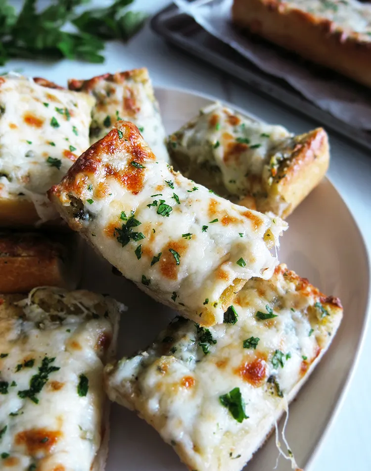

Garlic Bread Delight

What's for dinner tonight?
My family can all agree on one thing as a side for dinner.
Garlic Bread. It's the go-to in our house, and I'm sure it is in many of
your homes too! After all, who can resist that delicious garlic flavor mixed
with cheese and a crispy outside edge?! Garlic bread is a delicious and easy
side to make and one of the fastest things to go.
Ingredients
- French Bread
- Butter
- Garlic Powder
- Garlic Cloves
- Italian Seasoning
- Parmesan Cheese
- Parsley
Steps
- Preheat Oven and Cut the Bread: Preheat oven to 400 degrees.
Cut your French bread loaf lengthwise and place on top of a baking sheet.
- Make Spread: In a small bowl combine softened butter,
garlic powder, minced garlic, Italian seasoning and shredded cheese.
Then, spread it evenly on each side of the garlic bread.
- Bake: Bake the bread in the oven for 12-15 minutes until the butter
melts. You can also broil the top for 1-2 minutes at the end to give it a more crisp top.
- Garnish: Garnish with fresh chopped parsley if desired.
- Eat the bread.